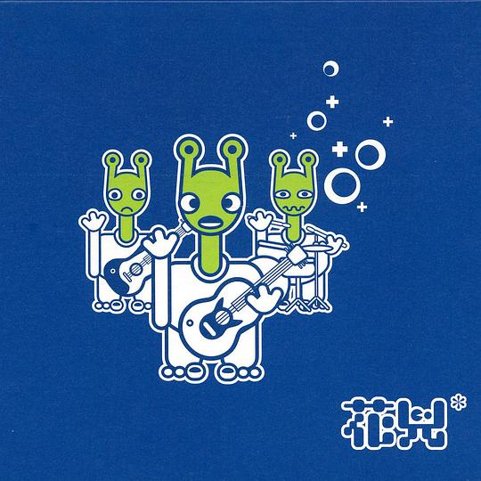
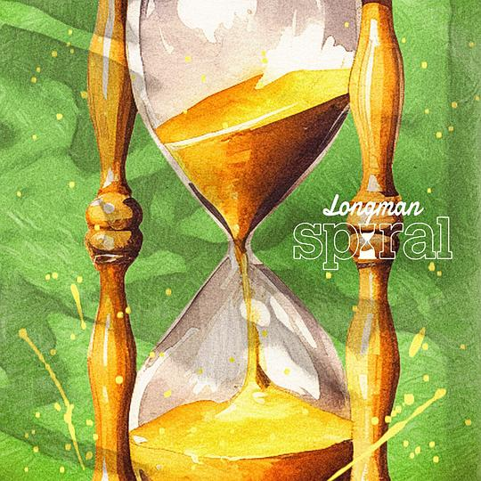
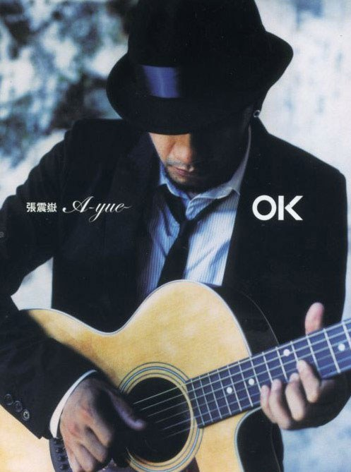

2024年8月
广播发布后不可编辑，所以每条都是那一刻的原话。
2024-08-30 22:51:55
2024-08-26 09:49:15
收藏小组讨论到豆列 理解 从家里两位老人晚年生活看到，我们养老需要准备什么（经济角度）…
2024-08-25 01:44:38
看过 开端 ★★★★☆
陪老妈找电视剧偶然翻到的，前几集很抓人，有待进一步观望。（2024, 8, 24，能主动地去写一些基层群众，这很好，但是故事还是很浮躁。白敬亭吃醋蛮好玩的，赵今麦没划精致的妆容，很真实。就是两人的感情线比较冗余。喜欢黄觉的冷漠热情。）（2024, 8, 25，熬夜看完了，结尾有些降智，故意在最后时刻才提出王萌萌下车的真正原因来劝解王夫妇，不过刘丹老师的表演张力真的大，我的情绪不自觉地就被带了起来，不是愤怒不是后悔不是伤心，只是说不清楚。不理解为什么最后一次老张相信了他们两，剧本总的来说漏洞还是不少，但是没怎么影响我的体验，所以我还是想推荐打四星。）
2024-08-24 14:35:26
想看 不成问题的问题
2024-08-24 01:14:03
在看 开端 ★★★★☆
陪老妈找电视剧偶然翻到的，前几集很抓人，有待进一步观望。
2024-08-23 00:05:23
在读 撒哈拉的故事 ★★★★☆
借的杨青的书，今天终于是看掉了一篇《沙漠中的饭店》。
2024-08-17 21:05:37
看过 放学后失眠的你 / 君は放課後インソムニア ★★★★☆
补标，追完了漫画。最后伊咲的漫步很意识流。杂耍蒙太奇的使用让最后成年的中见给了我心脏的一次有力的冲击，十分地震撼。结尾平淡地收场，故事整体上很轻松，就是夜晚的氛围描写得少了。喜欢野野这样单纯的喜欢怪谈的双麻花辫的美术生。
2024-08-17 21:05:15
听过 TV ANIMATION Sonny Boy soundtrack ★★★★★
喜欢《少年少女》和toe的所有歌。
2024-08-17 21:05:04

很punk。
2024-08-17 21:04:42

2024-08-17 21:04:07

喜欢《思念是一种病》。毕业时候放了《再见》。
2024-08-17 21:03:12
看过 狐妖小红娘剧场版：月红篇 ★★★★☆
好些年前或许距今过了有八年，我偶然在电视上听到了白月初你彳亍不彳亍的歌，了解到了这部动漫，对幼小的我打开了一个新的世界。
2024-08-17 21:01:52
看过 狐妖小红娘剧场版：王权富贵 ★★★★☆
犹记万水千山。
2024-08-13 23:19:53
在看 放学后失眠的你 / 君は放課後インソムニア ★★★★☆
补标，追完了漫画。最后伊咲的漫步很意识流。杂耍蒙太奇的使用让最后成年的中见给了我心脏的一次有力的冲击，十分地震撼。结尾平淡地收场，故事整体上很轻松，就是夜晚的氛围描写得少了。喜欢野野这样单纯的喜欢怪谈的双麻花辫的美术生。
2024-08-12 21:53:37
看过 风筝 / カイト ★★★★☆
结尾脚步的留白很有意思。中间两段的战斗的分镜有考究，让人在静止中感到运动。
2024-08-12 15:09:32
读过 我们八月见 ★★★★☆
开篇就是很熟悉的马尔克斯式的叙事。（2024, 8, 12，拖了好久才看完，独特的女性视角体现了其对于时代的追求，但还是慢了一步，没了马尔克斯的味道。）
2024-08-11 00:03:00
看过 我的阿勒泰 ★★★★☆
空镜真是十分的美，能明显察觉到李娟老师的笔触。灯光终于不扁平了，柔和，开始因地制宜。周依然怎么一点包袱没有，演什么活什么。（2024, 8, 9，感觉结尾有点仓促，还差一集结束。）（2024, 8, 10，最后一集实在大打折扣失去了表达的效果。不好不坏的结局。）
2024-08-04 20:24:21